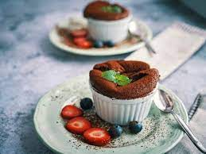

...Pratik Sufle Tarifi...
Sufle yapmanın bir çok farklı yolu vardır, ancak biz burada en pratik tarifi vereceğiz.
Malzemeler:
- 1 çay bardağı şeker
- 1 çay bardağı sıvı yağ
- 1 çay bardağı süt
- 1 su bardağı un
- 2 adet yumurta
- 2 yemek kaşığı kakao
- paket kabartma tozu

Not: Kakao yerine dilerseniz çikolata parçalarını benmari usulü eriterekte kullanabilirsiniz.
Yapılışı:
- Karıştırma kabına yumurtaları kırıp çırpın.
- Sonrasında şekeri ekleyerek çırpmaya devam edin
- Sırasıyla sıvı yağ ve sütü ekleyip çırpın.
- Un, kabartma tozu ve kakao (isteğe göre eritilmiş çikolata) ekleyip çırpın.
- Fincan bardaklara yarısına gelecek şekilde karışımı boşaltın.
- Tencereye yarısına gelecek şekilde kaynar su ekleyin ve fincanları yerleştirin.
- Yaklaşık 10 dk tencere kapağı kapaşı şekilde pişiriryoruz. Ve leziz suflelerimiz hazır...
Afiyet Olsun